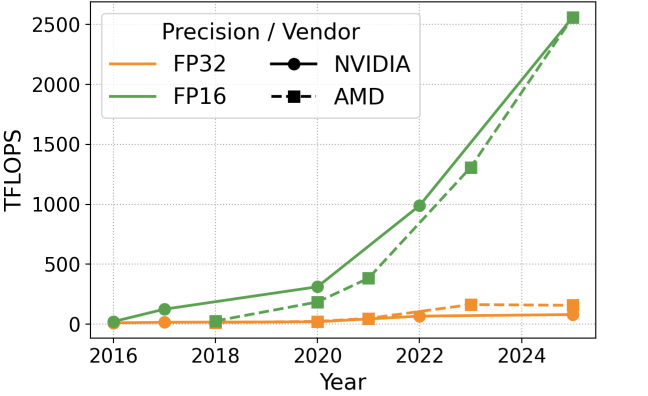
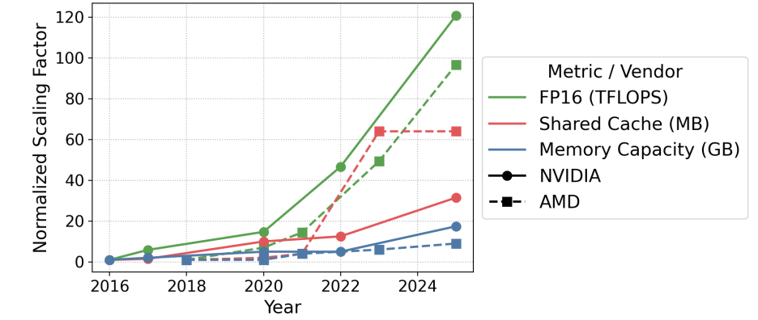

Generational Evolution and Cross-Generation Comparison
4.7.1GPU Generational Evolution: Compute, Data Supply, and Cooperation Scope#
Tracing one accelerator family across generations separates the features that persist from those that change — a distinction the architectural taxonomy alone cannot make.

The divergence in that figure is the central fact of the last decade of GPU design. General-purpose high-precision SIMD throughput (FP32) has grown slowly and remains below 200 TFLOPS, while low-precision matrix-engine throughput has risen to roughly 2,500 TFLOPS. Each generation's headline gain comes from the matrix engine and from ever-lower precision, not from the general-purpose datapath.
Raising matrix throughput, though, is only useful if operands arrive fast enough, so the same generations also reworked data supply and cooperation scope. NVIDIA's Tensor Core evolution includes redesigned operand-delivery mechanisms and tighter coordination among execution units, enabling greater overlap between data movement and computation and supporting larger matrix operations [1, 2]. Scheduling mechanisms, data-movement support and on-chip SRAM capacity all advanced alongside the arithmetic; the microarchitectural detail of that progression, from Volta through Blackwell, is traced in §1.8.
4.7.3Cross-Generation Comparison: Numerical Formats, Structured Sparsity, and Peak Conventions#
Peak-throughput numbers are only comparable if the conventions behind them are stated, so this comparison fixes them first: the values below are vendor-reported dense peaks in decimal units, FP32/FP64 use the listed scalar or vector peaks, lower-precision columns use matrix- or tensor-engine throughput where available, and a fused multiply-add counts as two operations. A dash means the cited source does not specify the format or the hardware does not support it. Years are the first public family disclosure; TPU and Neuron FP16/BF16 values are BF16.
| Vendor | Year | Accelerator | FP64 TFLOPS | FP32 TFLOPS | TF32 TFLOPS | FP16/BF16 TFLOPS | FP8 TFLOPS | INT8 TOPS | FP4 TFLOPS |
|---|---|---|---|---|---|---|---|---|---|
| NVIDIA | 2016 | P100 | 5.3 | 10.6 | — | 21.2 | — | — | — |
| NVIDIA | 2017 | V100 | 7.8 | 15.7 | — | 125 | — | — | — |
| NVIDIA | 2020 | A100 | 9.7 | 19.5 | 156 | 312 | — | 624 | — |
| NVIDIA | 2022 | H100 | 34 | 67 | 495 | 989 | 1979 | 1979 | — |
| NVIDIA | 2025 | B300 | 1.3 | 80 | 1250 | 2500 | 5000 | 165 | 15000 |
| NVIDIA | 2026 | Rubin GPU | 33 | 130 | 2000 | 4000 | 17500 | — | 35000 |
| AMD | 2018 | MI50 | 6.6 | 13.3 | — | 26.5 | — | 53 | — |
| AMD | 2020 | MI100 | 11.5 | 23.1 | — | 184.6 | — | 184.6 | — |
| AMD | 2021 | MI250X | 47.9 | 47.9 | — | 383 | — | 383 | — |
| AMD | 2023 | MI300X | 81.7 | 163.4 | 653.7 | 1307 | 2614 | 2614 | — |
| AMD | 2025 | MI355X | 78.6 | 157.3 | — | 2517 | 5033 | 5033 | 10066 |
| AMD | 2026 | MI455X | 5 | 315 | — | 5000 | 20100 | 5000 | 40300 |
| Google TPU | 2021 | TPU v4 | — | — | — | 275 | — | 275 | — |
| Google TPU | 2023 | TPU v5e | — | — | — | 197 | — | 393 | — |
| Google TPU | 2023 | TPU v5p | — | — | — | 459 | 459 | — | — |
| Google TPU | 2024 | TPU v6e | — | — | — | 918 | 918 | 1836 | — |
| Google TPU | 2025 | TPU v7 | — | — | — | 2307 | 4614 | — | — |
| Google TPU | 2026 | TPU 8t | — | — | — | — | — | — | 12600 |
| Google TPU | 2026 | TPU 8i | — | — | — | — | — | — | 10100 |
| AWS Neuron | 2018 | Inferentia 1 | — | — | — | 64 | — | 128 | — |
| AWS Neuron | 2020 | Trainium 1 | — | 47.5 | 190 | 190 | 190 | 380 | — |
| AWS Neuron | 2022 | Inferentia 2 | — | 47.5 | 190 | 190 | 190 | 380 | — |
| AWS Neuron | 2023 | Trainium 2 | — | 181 | 667 | 667 | 1299 | — | — |
| AWS Neuron | 2024 | Trainium 3 | — | 183 | 671 | 671 | 2517 | — | 2500 |
P100 and V100 entries do not imply BF16 support. MI100 reaches 184.6 TFLOPS in FP16 but 92.3 TFLOPS in BF16. Google's reported FP8 peaks for TPU v5p and v6e equal their BF16 peaks and should not be read as a native FP8 throughput increase. B300's dense INT8 value is half the cited 330 sparse TOPS, and Trainium 3 processes MXFP4 through its MXFP8 path.
Read down the GPU columns and the pattern from §4.7 repeats numerically: FP64 and FP32 creep upward while FP16 matrix throughput multiplies and entirely new, lower-precision formats — FP8, then FP4 — appear and immediately dominate the headline figures. The specialized path grows; the general-purpose one does not.
Structured sparsity is the second lever. Trained networks hold substantial redundancy, so many weights can be zeroed after pruning with little accuracy loss, cutting both computation and memory traffic. Fully unstructured sparsity is impractical in hardware because of irregular access and metadata overhead, so accelerators enforce an M:N rule — only M of every N values nonzero — which preserves locality, allows compact storage, and keeps the datapath regular enough for a matrix engine [3]. NVIDIA and AMD GPUs implement a fixed 2:4 pattern with lightweight metadata, roughly doubling throughput when the constraint holds [4, 5, 6]; AWS Neuron generalizes to 4:16, 4:12, 4:8, 2:8, 2:4, 1:4 and 1:2 for finer accuracy–throughput control [7]. The bit-level layout of these formats and the 2:4 representation itself are covered in §1.2.
4.7.4Cross-Generation Comparison: Memory Hierarchy and Scale-Up Fabric#
| Vendor | Year | Accelerator | Memory GB | Bandwidth TB/s | On-chip SRAM MB | Interconnect GB/s | Scale-up topology |
|---|---|---|---|---|---|---|---|
| NVIDIA GPU | 2016 | P100 | 16 | 0.7 | 4 | 160 | Hybrid cube mesh |
| NVIDIA GPU | 2017 | V100 | 32 | 0.9 | 6 | 300 | Hybrid cube mesh |
| NVIDIA GPU | 2020 | A100 | 80 | 2.0 | 40 | 600 | All-to-All |
| NVIDIA GPU | 2022 | H100 | 80 | 3.4 | 50 | 900 | All-to-All |
| NVIDIA GPU | 2025 | B300 | 279 | 8.0 | 126 | 1800 | All-to-All |
| NVIDIA GPU | 2026 | Rubin | 288 | 19.2 | — | 3000 | All-to-All |
| AMD GPU | 2018 | MI50 | 32 | 1.0 | 4 | 184 | Ring |
| AMD GPU | 2020 | MI100 | 32 | 1.2 | 8 | 276 | All-to-All |
| AMD GPU | 2021 | MI250X | 128 | 3.2 | 16 | 800 | All-to-All |
| AMD GPU | 2023 | MI300X | 192 | 5.3 | 256 | 896 | All-to-All |
| AMD GPU | 2025 | MI355X | 288 | 8.0 | 256 | 1075.2 | All-to-All |
| AMD GPU | 2026 | MI455X | 432 | 23.3 | 192 | 3600 | All-to-All |
| Google TPU | 2021 | TPU v4 | 32 | 1.2 | — | 300 | 3D mesh/torus |
| Google TPU | 2023 | TPU v5e | 16 | 0.8 | — | 400 | 2D torus |
| Google TPU | 2023 | TPU v5p | 95 | 2.8 | — | 1200 | 3D torus |
| Google TPU | 2024 | TPU v6e | 32 | 1.6 | — | 800 | 2D torus |
| Google TPU | 2025 | TPU v7 | 192 | 7.4 | — | 1200 | 3D torus |
| Google TPU | 2026 | TPU 8t | 216 | 6.5 | 128 | 2400 | 3D torus |
| Google TPU | 2026 | TPU 8i | 288 | 8.6 | 384 | 2400 | Boardfly |
| AWS Neuron | 2018 | Inferentia 1 | 8 | 0.05 (DDR4) | — | 32 | 1D chain |
| AWS Neuron | 2020 | Trainium 1 | 32 | 0.88 | — | 384 | 2D torus |
| AWS Neuron | 2022 | Inferentia 2 | 32 | 0.88 | — | 192 | 1D torus |
| AWS Neuron | 2023 | Trainium 2 | 96 | 2.9 | — | 1280 | 2D torus |
| AWS Neuron | 2024 | Trainium 3 | 144 | 4.9 | — | 2560 | All-to-All |
For GPUs, on-chip SRAM here denotes L2/shared cache; for NPUs it denotes a disclosed software-managed scratchpad. Interconnect values are aggregate bidirectional bandwidth per accelerator. TPU 8's 19.2 Tb/s ICI is expressed as 2,400 GB/s.
From the earliest to the latest listed NVIDIA and AMD generations, HBM capacity grew roughly 13.5–18× and HBM bandwidth roughly 23–27×. The two scale for largely independent reasons. Capacity improves through higher per-stack density — more dies per stack and denser DRAM dies — and through more stacks per package. Bandwidth improves through higher per-pin signalling rates across HBM generations and through wider aggregate I/O, mostly from additional stacks. Chiplet-based packaging supports both by enlarging the effective integration area, making room for more stacks with their PHYs and controllers.
Because memory has lagged compute, accelerators lean harder on larger on-chip SRAM. Through 2025 shared-cache capacity grew about 32× for NVIDIA and 64× for AMD relative to the earliest listed devices — "shared cache" meaning NVIDIA's L2 and AMD's large last-level cache. Bigger caches improve locality, amplify reuse and relieve off-chip bandwidth.

The retained chart shows endpoint growth of roughly 120× and 96× for throughput, 32× and 64× for shared cache, and 18× and 9× for HBM capacity. These plotted values predate the updated table specifications, but the qualitative result remains: compute growth outruns capacity growth for both.
On the fabric side, interconnect bandwidth has risen steadily while topologies have changed shape. AWS Trainium illustrates the trade cleanly [8, 9, 10]: Trn1 and Trn2 connect 16 chips in a 4×4 2D torus, Trn2 UltraServer links four such systems into a 64-chip domain through inter-instance rings, and Trainium 3 replaces the torus with the switched all-to-all NeuronSwitch-v1 fabric supporting up to 144 chips. A low-radix torus avoids switch silicon and scales incrementally, but diameter and contention grow with size; a switched fabric costs ports, area and power but shortens paths and makes performance less sensitive to placement — which matters most for communication-intensive collectives such as mixture-of-experts routing.
Switching is not the only alternative to a torus. Google TPU 8i's Boardfly builds a hierarchical high-radix network from four-chip blocks: eight boards form a fully connected group, and 36 groups are joined through optical circuit switches, giving 1,152 physical chip positions and up to 1,024 active chips. For the 1,024-chip configuration Google reports a maximum path of seven hops against 16 for the referenced 3D torus, a 56% reduction [11]. Shorter paths matter most for latency-sensitive collectives: during autoregressive decoding, small reductions across model-parallel shards can be a substantial fraction of per-token execution time.
References
- 1.Wei Sun et al. Dissecting tensor cores via microbenchmarks: Latency, throughput and numeric behaviors. IEEE Transactions on Parallel and Distributed Systems, 2022.
- 2.Weile Luo et al. Benchmarking and dissecting the nvidia hopper gpu architecture. 2024 IEEE International Parallel and Distributed Processing Symposium (IPDPS), 2024.
- 3.Asit Mishra et al. Accelerating sparse deep neural networks. arXiv preprint arXiv:2104.08378, 2021.
- 4.NVIDIA. NVIDIA A100 Tensor Core GPU Architecture. 2020.
- 5.Jeff Pool, Abhishek Sawarkar and Jay Rodge. Accelerating Inference with Sparsity Using the NVIDIA Ampere Architecture and NVIDIA TensorRT. 2021.
- 6.AMD. Introducing AMD CDNA 3 Architecture: The All-New AMD GPU Architecture for the Modern Era of HPC & AI. 2025.
- 7.AWS. NeuronCore-v4 Architecture. 2026. AWS Neuron SDK 2.31.1 documentation.
- 8.AWS. Trainium Architecture. 2026. AWS Neuron SDK 2.31.1 documentation.
- 9.AWS. Trainium2 Architecture. 2026. AWS Neuron SDK 2.31.1 documentation.
- 10.AWS. Trainium3 Architecture. 2026. AWS Neuron SDK 2.31.1 documentation.
- 11.Google Cloud. Inside the eighth-generation TPU: An architecture deep dive. 2026.